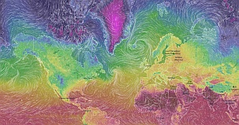

Current projects
Ventusky.com | www.ventusky.com

- Web developer (PHP)
- Database administrator (MySQL, PSQL)
- C++ developer
- bash scripting
Game engine for PC / iOS

Features:
- Abstract design capable of handling OpenGL 4.0 / OpenGL ES 2.0 / OpenGL ES 3.0 (and possibility to add DirectX)
- UI sytem
- VFS sytem
- OpenCL support
- Particle system
- LuaWrapper